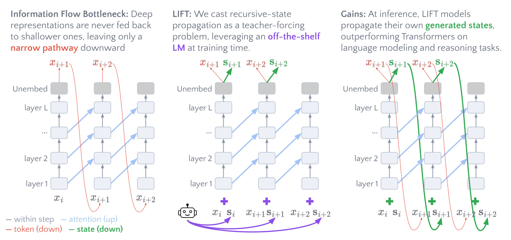
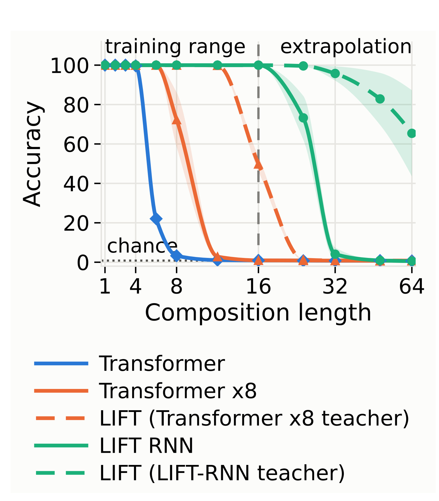
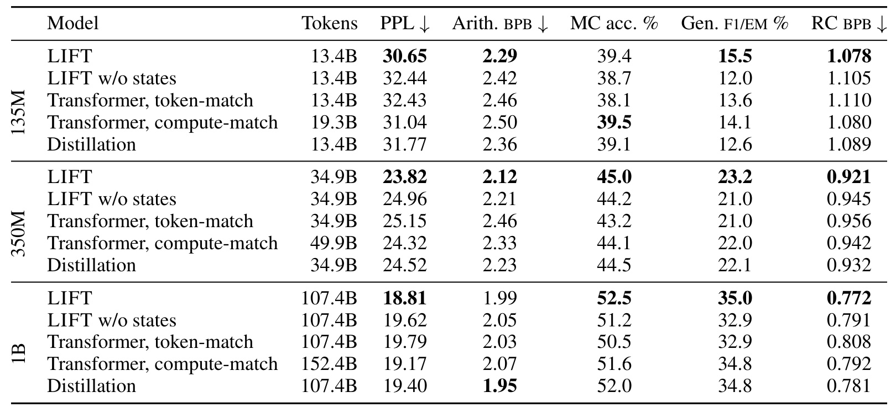
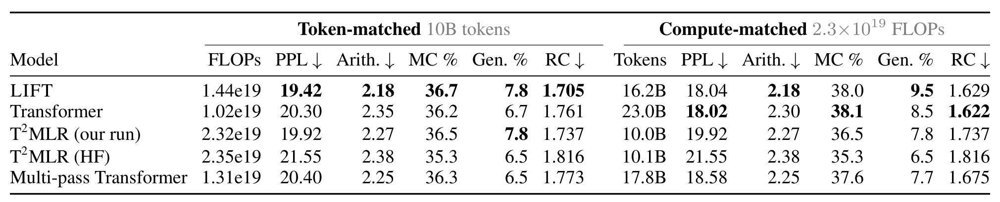
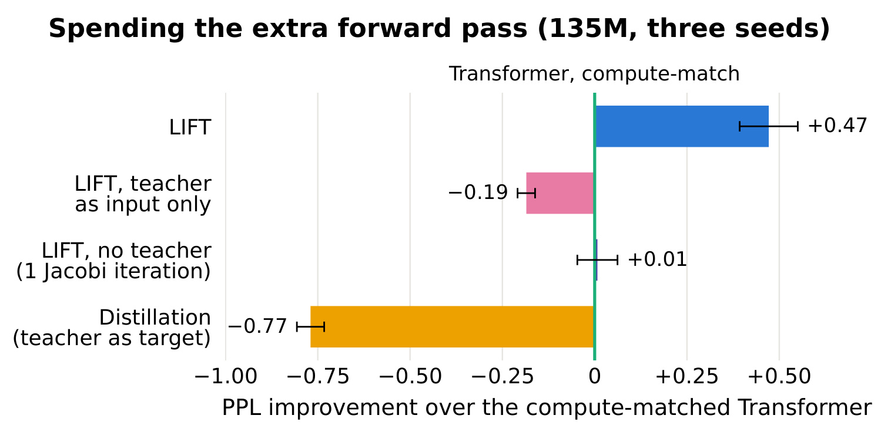
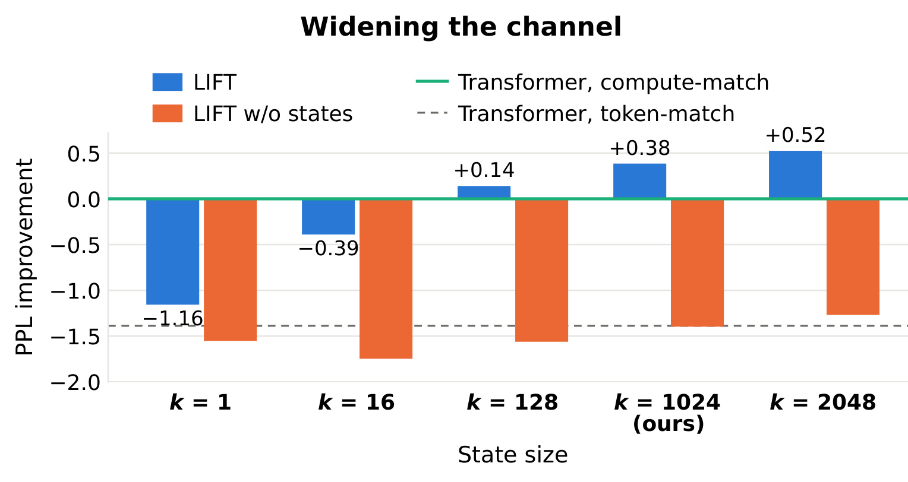
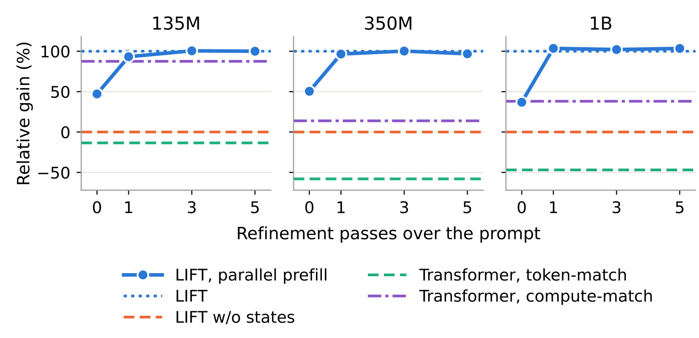
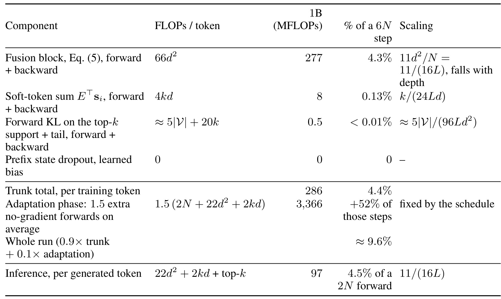
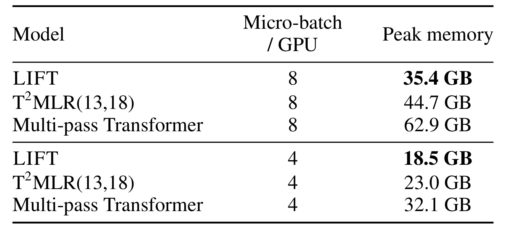

LIFT：以教师监督预训练潜在信息反馈 Transformer
Dor Tirosh、Ido Amos 与 Mor Geva 的论文 Pretraining Latent Information Feedback Transformers with Teacher Supervision，研究如何用教师状态监督预训练带潜在反馈的语言模型。第一作者来自特拉维夫大学，合作机构为耶路撒冷希伯来大学。arXiv:2609.38149 的 v1 于 2026-09-29 17:57 UTC 公开，本文按 2026-09-30 核验的完整 38 页版本解读。
作者项目仓库 当前根目录只有 LICENSE 与 README.md，后者明确说明代码和模型检查点即将发布，因此仍是官方占位入口，实现与权重待发布。本文数值来自论文正文及附录；推荐系统迁移属于研究推论。
Transformer 的深层表示不会反馈给后续位置的浅层，跨生成步骤向下传递信息只能经过已解码词元；这个狭窄通道迫使模型重复计算中间结果，并舍弃其他可能的延续。
1. 背景和问题
理解这句话需要区分“看得见历史”与“能把历史深层计算交给浅层继续使用”：自注意力确实能访问历史位置，但标准网络中的信息仍沿层数向上流动。一个位置最后一层刚计算出的复杂结果，不会自动出现在下一个位置第一层的输入中。只有模型先把它转成离散词元，再把这个词元作为下一个输入，才完成了深到浅的回路。
这种问题定位也限制了论文结论的适用范围：增加通道只是提供新的计算可能性，能否真正利用它，还取决于训练信号和数据中是否存在需要跨步复用的结构。不能仅由箭头方向推出任务表现一定提升。
普通自回归语言模型并非完全没有记忆。注意力缓存保留各层历史键值，新的位置能够查询它们；这里的瓶颈是计算路径和方向，而不是文本上下文彻底丢失。若某个推理结果在第十五层才出现，而完成下一跳还需要若干浅层计算，那么当前词元剩余的层数可能不够。以后生成的位置仍可通过注意力利用历史，但浅层无法直接读取早先最高层的完整表示。作者因而讨论三种潜在收益：复用深层中间结果；保留多个可能继续的方向；让有效计算深度随着生成长度增长。它们是架构动机，不应直接当作本文已经逐项测量完成的因果解释。
离散词元通道一次只能选择词表中的一个符号。词表约十万时，单个符号至多携带约十七比特的选择信息；这不是整个模型上下文容量的上限，也不意味着输出概率真的只有十七比特。限制针对“通过被选中的词元回到浅层”的那条特定路径。下一词元的完整分布却同时记录候选的排序、概率差距和不确定性。例如，一个步骤可能同时支持两个中间答案，采样只留下其中一个，软分布则保留两者的相对权重。LIFT 希望让这些信息与真实词元并行进入下一步，而不是要求所有内部推理都写成可读文字。
这一动机与连续思维、循环网络、循环深度 Transformer 有联系，但训练难题不同。若学生在位置二的输入必须依赖位置一刚产生的状态，位置三又依赖位置二，预训练就不能一次处理整段序列。大规模 Transformer 的成本优势很大程度来自训练时的词元教师强制：全部真实词元已知，各位置可以并行。给网络加一个反馈箭头很容易，保持这种并行性却不容易。精确循环需要串行运行及跨步骤反向传播；少量 Jacobi 迭代让各位置先猜测状态再不断修正，可以并行，但每多一次修正都要花额外前向计算，且有限轮次不能保证等于真实自回归状态。
LIFT 把这个结构依赖转成数据问题：由已经训练好的外部语言模型预先计算各位置的状态，学生读真实词元时同时读这些教师状态。这样输入不依赖当前学生的前一位置输出，整个序列又能并行训练。困难随之转移：推理时外部教师被移除，学生只能使用自己的输出状态，训练与推理分布便出现偏移。论文的方法必须同时解释状态选什么、如何融合、怎样监督以及何时适应自生成状态。缺少其中任何一环，都不能仅凭“多喂一个软词元”重现主要结果。
教师在这里有两种职责。蒸馏通常只要求学生的输出接近教师；LIFT 除了输出监督，还把教师分布作为下一位置的输入。教师输入提供了从训练第一步就有信息的反馈通道，输出对齐则让学生日后能供给类似状态。因此，本文的主要对照不只是普通 Transformer，还包括仅蒸馏、关闭状态通道以及没有教师的反馈模型。只有这些对照一起看，才能辨别收益来自训练信号、更大的参数量、额外计算，还是推理时真正使用了状态。论文并没有把教师看成无需成本的魔法标签，计算匹配包含教师前向；但教师此前预训练的投入是另一个需要单列的口径。
阅读本文还要区分结构表达能力与实际规模收益。置换组合任务被设计为需要沿序列更新离散状态，能较干净地观察固定层数网络的限制；自然语言预训练则更接近真实用途，但指标受到数据混合、模型大小、损失和评测协议影响。一个两层小模型能在弱教师监督下解决某段长度的组合任务，并不等于它获得了无限长度泛化，也不等于十亿参数语言模型已经学会可靠长程推理。作者的证据分别支持有限长度状态跟踪改善和若干语言建模、下游平均指标改善，需要分别陈述。
对推荐算法研究者，这篇论文的直接价值是为序列状态建模提供训练思路，而非一个可直接替换排序器的模块。用户行为序列中，某些深层偏好概括可能值得跨事件复用；若每次都只通过一个离散物品标识传递，可能损失多个兴趣假设。但是语言模型的词表分布与推荐候选集合并不等价，物品更新、曝光偏差、反馈延迟都会改变状态语义。将该机制迁移到推荐系统仍需重新定义教师、监督和在线状态更新，本文没有报告推荐数据集或线上业务指标。
另一个阅读前提是“同规模”的定义。教师和学生可以拥有相同的骨干形状，但教师训练更久；学生又增加融合参数，所以并非参数完全相等。作者把词元匹配、计算匹配和教师能力分别列出，正是为了避免将它们混成同一个公平性条件。对于状态预测而言，教师不必在每个最终任务上都强于学生，但必须在训练位置提供可利用的中间分布。是否存在更便宜的教师、更小的词表或更少状态样本足以训练通道，是本文之后仍值得探索的资源问题。这也解释了为什么复现不能只复用某个最终检查点，而要保留完整训练阶段与评测模式。
2. 方法
2.1 输出分布成为可反馈状态
标准网络在位置 $i$ 的最后层隐藏表示经过输出矩阵得到 logits，再计算下一词元分布。输出头通常已经是语言建模不可缺少的部分，LIFT 复用它来生成状态，而不是另外引入一个任意隐藏空间预测器。这使输出监督与状态监督直接共享坐标。沿用原文式（1）与式（2），信息通路可写为：
符号解释：这里 $L$ 是层数，$h_i^L\in\mathbb R^d$ 是位置 $i$ 最后层表示，$U\in\mathbb R^{|V|\times d}$ 为输出矩阵，$V$ 为词表。$p_i$ 是预测位置 $i+1$ 的概率，而不是当前词元的编码。位置索引的这个偏移决定后续状态必须与下一个词元配对。
符号解释：左边是跨位置向更高层传递的注意力路径，右边是经解码词元 $x_{i+1}$ 回到输入嵌入 $h_{i+1}^0$ 的反馈路径。LIFT 在右边之外加入连续状态，保留真实词元，不用潜变量取代正常文本输出。两条回路都遵守生成的因果次序，区别只在传回浅层的信息形式。

Figure 1 的左半部分强调方向：蓝色注意力边让历史位置的信息流向更高层，红色细边绕过网络回到输入，却只携带采样出的词元。中间部分是预训练，紫色教师在不同位置分别提供状态，学生同时预测下一词元和下一状态。右侧才是部署阶段，绿色粗边把学生自己的预测分布反馈给下一位置。三个面板展示的是同一架构从普通模型到训练再到推理的关系，不是三个需要一起在线运行的模型。教师只出现在训练侧，推理并不需要同时调用第二个完整语言模型。
图中的状态与词元并列还解释了为什么该方法不会强迫外部输出变成不可读向量。真实词元仍承担语言生成和上下文可见信息，软状态则携带候选延续的分布。融合之后的输入仍进入原来的 Transformer 堆栈，注意力缓存机制没有被删除。训练阶段紫色输入避免了学生位置之间的串行依赖，但并没有消除因果掩码；位置的状态由此前上下文产生，不应偷偷包含后续答案。实现时必须核对教师 logits 到下一位置状态的移位，错一位可能造成标签泄漏或把状态与错误词元配对。
另一个容易误读之处是图中绿色线的“宽”。它表示反馈信号更丰富，并不表示直接传输所有层的隐藏向量，也不是在每个词元之间额外运行多轮长思维。论文实际选择了截断的输出分布，经嵌入期望压回模型维度后再融合。这个选择让教师与学生在词元概率坐标上对齐，避免两个模型隐藏空间方向不同的问题，但也要求共享词表或额外处理词表映射。图本身只说明通道设计，是否值得付出额外开销仍由后面的消融和等计算量比较决定。原文式（3）将模型写成同时预测词元与状态的条件模型：
符号解释：其中 $\theta$ 是学生参数，$s_i$ 是输入位置 $i$ 的状态。这个记号是生成流程的概括，词元与状态不是两个完全独立输出头。符号解释中的条件前缀包含真实文本与状态历史，运行时这两者的组合才决定输出。二者都来自相同 logits；词元照常采样，状态按式（4）构造：
符号解释：$\operatorname{topk}$ 保留最大的 $k$ 个 logits，其余设为负无穷；$\tau$ 为温度。$s_{i+1}$ 至多有 $k$ 个非零分量，主语言模型实验使用 $k=1024$、$\tau=1.5$。概率空间的每个坐标都对应同一个词元，比跨模型回归隐藏表示更容易建立一致监督。它保留的是分布结构，不保证每个候选都代表一条有效推理路径。
2.2 融合词元与状态的输入层
状态先通过输入嵌入矩阵形成期望词嵌入，再与实际词元嵌入分别归一化和拼接，最后经过带残差的 SwiGLU。分开归一化避免两路输入仅因向量尺度不同而互相压制，拼接保留了它们的来源区别，而不是直接相加后让网络猜测哪部分来自教师。原文式（5）为：
符号解释：$E\in\mathbb R^{|V|\times d}$ 是输入词嵌入，$W_s$ 为状态投影，$W_g,W_u$ 是门控与值变换，$W_d$ 把拼接后的中间表示压回维度 $d$，分号表示拼接，$\odot$ 表示逐元素乘法。残差保留了真实词元的直接通路，状态通过可学习的非线性分支补充输入。首位置没有前驱输出，因此用一个学习到的初始向量；这与后文状态 dropout 的偏置向量在用途上要区分。
融合层新增约 $11d^2$ 个权重和初始向量，原文按包含嵌入的参数量计算，在十亿级配置中约占百分之三。这个比例随着网络加深而下降，因为骨干参数随层数增长，而融合层只放在输入端。投影后的软词元均值是压缩：即便状态保留一千多个候选，它们最终仍融合到固定维度，不是免费保存任意信息。温度、宽度以及状态嵌入的尺度共同决定模型能否利用该分布，简单把概率最高词元复制一次不能等价替代。
训练时，冻结教师对整段真实文本并行运行，生成每个位置的 logits；经过同样截断与温度变换后，移位成学生下一位置的输入状态。教师没有梯度，状态可以预先计算或以冻结前向产生，学生各位置的输入在自身前向开始前已经确定。这里“预先”指相对学生计算的依赖顺序，不意味着论文已证明把整个训练语料的状态持久化存储最划算。大词表下缓存、量化、带宽和数据吞吐也会成为实现选择；附录说明输入状态量化为八比特，但没有把这理解成整个网络使用八比特训练。
2.3 教师强制、状态对齐与自身状态适配
仅在教师状态上训练可能让学生过度依赖高质量外部输入，部署时自生成误差会沿反馈链累积。作者先增加输出状态对齐，再在训练末段切到自身状态。两步分别约束预测分布和训练输入，不能只保留其中一步就假定部署偏移已经消失。原文式（6）的联合目标为：
符号解释：星号表示教师 logits，第一项是正确下一词元的语言建模损失，$\lambda$ 控制对齐强度，主实验为 $1.5$。这里教师既提供输入又提供目标，后面的蒸馏基线只保留第二种职责，因此能检验反馈是否真的有额外价值。为了允许提示词一次并行预填充，训练以概率 $p=0.5$ 对一条序列抽取前缀长度 $m$，把这段前缀状态替换成学习偏置。附录式（8）表示为：
符号解释：$b\in\mathbb R^d$ 是无上下文状态的学习偏置，$m$ 在零到序列长度之间均匀抽取，首位置仍使用初始状态。这样网络既见过有状态输入，也见过完整前缀无状态输入。它不能保证两种模式效果一致，只是使并行预填充成为训练支持过的模式。对齐不是简单在教师前 $k$ 个候选内重新归一化后做 KL。设 $S$ 为教师保留的词元集合，$p_\tau^\star,p_\tau$ 为全词表温度分布，$P,Q$ 分别是教师、学生在 $S$ 上的总质量，附录式（9）为：
符号解释：$v$ 是词元索引，尾项把集合外概率合成一个结果，$\tau^2$ 是蒸馏缩放。保留尾质量可避免持续强迫学生把集合外所有概率都压低；这是有限支持状态与完整输出概率之间的重要区别，丢掉尾项会改变优化目标，而非单纯省计算。最后百分之十训练关闭教师对齐项。每个微批次等概率选择一次或两次无梯度准备前向：第一轮输入无状态偏置，第二轮若执行则读第一轮移位后的预测状态，最终带梯度的一轮读最近状态，只优化语言建模。所有反馈状态都 detach，不跨准备轮次反向传播；平均多出一点五次无梯度前向。这一阶段适应自身状态分布，不是从零学会整个反馈机制。它与精确串行展开仍有差距，有限并行修正不能自动证明长生成时状态稳定，但附录消融能检验其必要程度。
3. 实验结果
3.1 状态跟踪与表达能力
首先看人工构造的五元素置换群，群中有一百二十个元素。任务给出初始置换及一串操作，预测组合后的最终状态。原文式（7）为：
符号解释：$s_0$ 是初始状态，$a_i$ 是第 $i$ 个置换操作，$\circ$ 表示组合。这一节的 $s_i$ 表示离散任务真状态，与方法章的概率反馈状态共享符号但含义不同。两个隐藏层、约两百万参数的模型在训练长度不超过十六的范围学习，使用三个随机种子；教师强制版本训练五千步，较长基线四万步。

Figure 2 的横轴在长度十六以内近似线性，超过十六后用对数间隔，不能按图上水平距离计算性能衰减速度。蓝色普通 Transformer 很快失效，训练八倍的橙色实线把有效长度向右推了一些，但较长序列仍接近机会水平。橙色虚线则是使用这同一个弱教师状态训练的 LIFT：长度十二时可达百分之百，长度十六约一半正确。教师在长度十二只有约百分之三准确率，说明教师最终答案弱，并不代表其每步输出分布没有可供学生利用的信息。学生增加反馈后，可以把这些局部线索组成不同于教师的计算路径。
绿色实线是精确循环训练的 LIFT-RNN，绿色虚线是使用其状态并行训练的学生。后者在长度三十二仍约百分之九十六，长度六十四约百分之六十五，超过了最大训练长度。这个现象支持有用教师状态能够帮助模型学到可外推的递归过程，但普通 Transformer 教师对应的橙色虚线没有相同外推能力。论文明确区分两者：弱固定深度教师带来训练范围内的显著改善，却不构成无界计算深度的经验证明。不能把绿色模型的外推结果归给所有 LIFT 变体。
理论背景也有条件：置换组合的复杂度论结论依赖通常的复杂度类不相等假设，指固定深度 Transformer 随长度增长的表达限制，不是声称有限长度下所有 Transformer 必然失败。附录把普通模型训练预算扩到二十倍、四十倍，长度十二仍仅约百分之十、十六及以后接近机会水平，这减弱了“只是训练不够久”的解释。与此同时，小任务用线性融合、不同状态宽度、不同损失和串行末段适配，不能把它的精确收益直接移植到主语言模型配方。
3.2 三种规模的语言模型
主预训练基于 OLMo 2 数据和骨干，规模标签按非嵌入参数量命名。135M、350M、1B 的总参数分别约为 237M、490.2M、1484.9M，因此与其他论文按总参数命名的模型比较时必须重新核对。上下文长度分别为一千零二十四、二千零四十八、四千零九十六；训练词元预算为 13.4B、34.9B、107.4B。小规模跑三个种子，较大两个规模受计算约束只跑一个，不能把评测样本 bootstrap 当作多次训练稳定性的替代。

Table 1 中 PPL、算术 BPB、参考补全 BPB 越低越好，选择题准确率和生成指标越高越好。等词元比较时，三个规模的 PPL 分别从 32.43 降到 30.65、从 25.15 降到 23.82、从 19.79 降到 18.81，降幅约百分之五。十亿级的选择题平均准确率从 50.5 提高到 52.5，生成组从 32.9 提高到 35.0，参考补全从 0.808 降到 0.772。它们说明额外状态在固定数据量下有效，但单看这一比较无法排除更多计算资源的作用，因此表中还给出训练更多词元的等计算量基线。
等计算量下，350M 与 1B 的聚合指标仍全面优于普通 Transformer；135M 选择题却是 39.4 对 39.5，不能写成所有格子获胜。蒸馏也不是在每项都落后：1B 算术 BPB 为 1.95，优于 LIFT 的 1.99。文中“多数任务”和“三十六项中的三十三项”是跨下游套件的统计，不是整张表对每种基线逐格全胜。关闭状态后，同一套 LIFT 权重的 PPL 回到 32.44、24.96、19.62，显示推理时持续使用反馈通道承担了可观收益，而不仅是训练时额外正则化。
下游生成列混合多个任务的 F1 或精确匹配，不能解释成统一的答对率；参考补全是在正确答案文本上的概率，不等于自由生成成功。主表剔除了几乎所有模型都处于机会水平或地板的若干任务，附录仍报告它们：复杂数学与代码生成不少结果低于百分之三。小模型生成长度还有特定上限，跨规模生成成绩并非完全同协议。故本表支持该训练方式改善这些小中型基础模型的预测质量，尚不足以支持强通用推理系统的结论。十一种验证语料的附录 PPL 方向一致，是比单一 C4 更广的证据，但仍来自同一预训练家族。
算术任务是两到十个个位数字的加减，不输出思维链。论文主报正确答案的 BPB，附录说明从三个操作数起，teacher-forced argmax 的精确匹配也大多只有几个百分点。更低 BPB 可以表示模型给正确答案更高概率，却远未达到“可靠解题”。模式延续在各规模对等词元基线有约百分之六到十的 BPB 改善，350M 和 1B 对两倍词元模型有百分之四到五改善；135M 对两倍模型基本持平。训练效率曲线显示后期追平 LIFT 所需基线词元倍率上升，但这不是无限训练预算下仍持续扩大的定律。
3.3 迭代反馈基线与预算
第二组实验换用 SmolLM2-135M 和 FineWeb-Edu，不能与前表直接拼成规模曲线。对照包括 T2MLR 官方权重、自训练复现以及作者根据同时期论文实现的 Multi-pass Transformer；后者并非对方官方最终系统，优化器和残差设置为共享骨干条件做了适配。

Table 2 左半是约一百亿词元的比较，右半以 T2MLR 该次训练的约 $2.3\times10^{19}$ FLOPs 为共同预算。左侧 LIFT 的 PPL 为 19.42，普通模型为 20.30，自训练 T2MLR 为 19.92；生成任务与自训练 T2MLR 同为 7.8。右侧因为单词元更便宜，普通 Transformer 能训练 23.0B 词元，LIFT 为 16.2B，Multi-pass 为 17.8B。这种机会成本是论文最重要的实验设计之一：额外迭代的收益必须超过把预算直接花到更多样本上的收益，不能只在同词元条件下讨论算法效率。
右半并非 LIFT 全胜普通模型。PPL 是 18.04 对 18.02，选择题是 38.0 对 38.1，参考补全是 1.629 对 1.622，三个数值都是普通模型稍优；LIFT 的算术为 2.18 对 2.30，生成指标为 9.5 对 8.5，更好。作者结合三种子方差将整体描述为持平或领先，比较精确的中文结论是：相同计算预算下，LIFT 保持竞争力，在程序性和生成任务上更有优势，却不支配所有指标。若只摘取左半最佳值，会把训练方法的实际资源代价遮掉。
T2MLR 使用十六次前向细化和四次反向细化，近似更精确但训练每个词元更贵；Multi-pass 用更少轮次，等词元时 PPL 较差，等算力时反而超过 T2MLR。这为“状态近似质量与训练吞吐存在取舍”提供具体例子。论文这组 LIFT 没有使用 KL 项，以隔离传播机制，不能把主实验的超参数直接套进来。等词元几种反馈方法的差异也大多落在种子噪声内，算术上 T2MLR 方差较大，因此小差值应审慎解读，而不是把小数点后的排序当作稳定架构排名。官方权重与自训练复现的差异也提醒读者，检查点训练步数、退火形状及最终学习率会影响结果。作者让主要受控对照共享训练配置，但保留官方权重作为参考，这比把来源不同的最佳分数混成统一排名更透明；后续复现仍应先比较同一实现下的相对差值。
3.4 教师角色与通道宽度
教师是否只是让学生多了一份蒸馏信号，需要控制额外前向计算的用途。作者把相同配方中的教师分别作为输入和目标、仅作为输入、仅作为目标，或完全不用教师而多跑一次自身前向。

Figure 5 的零线代表等计算量普通 Transformer，横轴越向右表示困惑度改善越大，误差棒是三个训练种子的差值标准差。完整 LIFT 平均改善 0.47，标准差 0.08；没有教师、用自身一次并行预测状态只改善 0.01，标准差 0.05，基本打平；教师只作输入反而落后 0.19，教师只作目标的蒸馏落后 0.77。因此在这套小模型设置中，把教师输出同时用于输入和目标才超过“继续多看数据”的机会成本。它不是关于所有蒸馏算法的普遍否定，而是这一教师、数据、预算及若干补充调参下的结果。
仅教师输入的失败尤其值得注意。训练时收到有信息的状态并不保证推理时能生产同质量状态；没有对齐，学生自己的状态偏离训练状态更远。附录以教师状态和自身状态分别评估，两者困惑度差约 0.51，而完整 LIFT 为 0.32。关闭通道后，仅教师输入变体甚至弱于等词元普通模型，说明网络可能形成了难以移除的外部输入依赖。这个结果使“只把教师 logits 拼进输入就会获益”的工程直觉不成立，训练输入契约必须连同部署时的状态生成机制一起考虑。
图中均值与正文主表的单次运行数字不完全一致，是种子聚合口径不同，并非计算错误。作者另外尝试改变蒸馏温度、全词表纯 KL 以及随后语言建模退火，未弥合差距。大部分下游细项在等计算量时仍处于种子噪声中，不能把困惑度消融自动推广成每个任务显著提升。末段适配消融也显示，普通模型到最后十分之一才加融合层几乎无效；十亿级完全不适配仍保留主要增益约百分之七十三，说明有价值的通道主要在前面教师强制训练期间形成，适配负责收尾。
接下来改变状态保留的候选数量，检查收益是否只因为多输入了一个教师猜测的词元。

Figure 6 蓝柱表示使用反馈状态，橙柱表示同一权重关闭状态；零线仍是等计算量普通模型，而灰虚线是等词元模型。状态只保留一个候选时落后等计算量基线 1.16 个困惑度，十六个候选落后 0.39；一百二十八、千零二十四、二千零四十八个候选时分别领先 0.14、0.38、0.52。越宽的分布通常越有效，单个教师预测词元不等价于保留不确定性结构。橙柱则集中在相近范围，说明宽度的主要收益通过推理阶段传输状态体现，而非单纯训练出更好的无状态 Transformer。
宽度也存在边际收益递减。一到十六改善明显，随后每次扩展收益缩小；从千零二十四到二千零四十八的额外困惑度改善约 0.14，但有状态相对无状态的差值几乎不再增长，分别为 1.78 与 1.79。因此不能把更宽必然更有信息、无限增宽必然更强当成结论。作者保留一千零二十四作为各规模统一设置，既得到主要增益，也避免为了很小的验证差值继续扩大状态支持。这里的宽度实验主要来自一个训练种子，显著性区间对验证序列做配对 bootstrap，测量的是同一次训练对评测样本的敏感性。
从实现角度看，宽度进入软词元求和的计算量，在十亿级训练步中这部分约百分之零点一三，所以矩阵计算口径下扩宽较便宜。不过该比例没有包含所有候选选择、内存访问、存储布局和分布式通信的端到端影响。附录对单候选情形还有特定描述，复现时应确认它是否保留原始概率缩放，而不能只凭主公式假设完全等于普通硬词元。消融支持“分布比单一决定更有价值”，却不能直接证明模型同时维护了可解释的多个推理分支。
3.5 预填充与计算成本
完整状态传播要求提示词也按位置顺序运行，会损失标准模型并行预填充的优势。作者先用无状态偏置并行处理提示，再用前一轮移位预测做少量并行修正，最后生成阶段仍逐词元反馈状态。

Figure 7 的纵轴不是准确率。百分之零对应预填充和生成均关闭状态，百分之百对应全程按序传播状态；各任务先按自身增益归一化，再对三个任务组取平均。横轴零表示无修正的并行预填充，一表示额外再做一次并行前向。三个规模在一次修正后都接近顺序预填充，保留约百分之九十三到一百零四的状态收益，三次或五次变化很小。少数点超过百分之百意味着该评测聚合指标稍高于顺序版本，不表示模型突破性能上限，也不能用纵轴直接换算统一的任务准确率提升。
没有修正时，仅在生成阶段恢复反馈，仍保留约百分之三十七到五十一的平均收益；算术更依赖提示阶段的状态链，只保留约百分之十八到二十六。一次修正可恢复算术约百分之八十九到一百零二的收益。这区分了“无状态 LIFT”与“只在预填充无状态”的不同设置。后者生成时依然有回路，服务系统可以按延迟预算选择预填充模式，但不能把关闭整条通道的主表行误当成并行预填充的全部效果。
计算上，一次修正让提示词前向 FLOPs 大致翻倍，却把顺序预填充的多个串行步骤变成两次并行运行。生成答案越长，这个固定准备成本在步骤数中的比例越小；论文给出的短答案任务额外步骤比例约百分之十三到十七，长思维链任务约百分之零点五。但步骤计数不能替代真实延迟：整段预填充和单词元解码的工作量不同，硬件利用率、批处理、缓存长度也不同。因此图中收益恢复是模型质量结果，不是已经完成线上首词延迟和吞吐优化的证明。
接着把架构与适配造成的额外 FLOPs 拆开，防止把“只加一个小融合层”理解成全部训练开销。

Table 18 以十亿级模型、标准每训练词元约六倍非嵌入参数量的 FLOPs 为分母。融合层前反向约 277 MFLOPs，占百分之四点三；软词元求和约八 MFLOPs，占百分之零点一三；截断支持与尾部 KL 的额外计算小于百分之零点零一。前九成主干训练阶段新增约百分之四点四，末段平均多一点五次无梯度前向，使这些步骤额外增加约百分之五十二；按训练阶段加权后，除教师外整个训练新增约百分之九点六。推理每生成词元额外约 97 MFLOPs，占基准前向百分之四点五。
必须连同表题读取：上述训练百分之九点六明确排除了教师前向，而主表的等计算量预算包含教师前向、融合和末段额外轮次，所以普通模型可以多训练约百分之四十二到四十四词元。附录还坦诚记录实现中末段误跑了不会使用的教师前向，该成本也计入等计算基线；删掉这部分后基线预算会略低，原比较因此在这一点上偏向普通模型。这不是让教师免费，而是说明实际运行计费和算法必要计算还有细微差别。
另一个边界是教师的历史预训练。本实验使用同规模、训练更久的现成教师；计算匹配计入本次产生状态的前向，并没有把从零训练教师的全部账单摊给每个学生。如果组织已经拥有可复用教师，这一比较有现实意义；如果专门为一个学生新训教师，总项目成本就会不同。更大或训练更久的教师只带来边际变化，不能据此认定任意弱教师均可。表中的深度缩放公式解释融合占比为何可能下降，但大规模端到端速度仍需实测，不能把 FLOPs 比例直接当作延迟增幅。
最后考察并行反馈方案保留激活造成的显存成本。

Table 19 在两张 B200、同一容器和代码环境中测量 PyTorch 单卡峰值分配显存，序列长度为二千零四十八，最终全局批量通过梯度累积对齐。每卡微批量八时，LIFT 为 35.4 GB，T2MLR 为 44.7 GB，Multi-pass 为 62.9 GB；微批量四时分别为 18.5、23.0、32.1 GB。两个批量下相对顺序一致，说明其较低峰值不是只在一个批量点碰巧出现。数据不包括普通 Transformer 的同表行，因此不能从这里计算相对普通训练的显存节省。
差异来源与梯度图有关。LIFT 主阶段需要教师 logits 选择状态和临时软词元矩阵，但教师冻结，末段准备轮次也不留跨轮梯度。T2MLR 保留递归缓存及需要求导的细化激活；Multi-pass 的三轮批次需要保留三轮激活，最大批次决定能否运行完整训练日程。平均多数批次更便宜不意味着峰值内存可以按平均值采购。论文在该显存测试开启 KL，虽然对应效果比较那组模型不使用 KL，因此这个对 LIFT 的估算相对保守。
这张表是硬件实测，证据等级不同于前表 FLOPs 公式，但范围仍有限。PyTorch 分配峰值不是显卡总驻留占用，不等于进程外监控的全部显存，也不是跨硬件可直接复制的吞吐数字。不同检查点策略、融合算子、并行切分可能改变排序，作者所测配置并不穷尽各方法优化上限。迁移时应同时记录批量、上下文、精度和梯度保留方式，再讨论每单位成本收益；仅拿 35.4 与 62.9 两个数宣传“节省近半内存”会省略它比较的具体替代方案和训练模式。对于实际训练排期，还应区分峰值是否来自主阶段还是适配阶段，冻结教师是否常驻同卡，以及梯度累积是否改变通信开销。表中固定测量条件支持这一组实现的内存排序，却没有给出各模型在相同显存上可达到的最大训练吞吐。
4. 总结
LIFT 的研究贡献是把潜在反馈的预训练输入从学生自身的串行计算中解耦：教师概率分布提供可并行读取的状态，词元嵌入与软状态经过小型融合层共同进入网络，输出对齐和末段自身状态适配让部署时不再依赖教师。这一组合比单独增加蒸馏损失更有针对性，也使“已有教师算力如何复用”成为架构设计的一部分。最有说服力的证据不是某一个最佳成绩，而是弱教师状态跟踪、关闭通道、教师职责消融、宽度消融及等计算预算对照之间形成了相互约束。
对大模型训练，优先可迁移的是训练与部署状态契约的设计：如果新增输入来自外部模型，就必须让学生学会在没有外部模型时产生兼容输入。共享词表的概率空间提供了较直接的对齐坐标，尾质量处理防止错误压缩分布，自身状态适配降低暴露偏移。但它仍是有限轮次近似训练的循环系统，长生成中的误差积累、跨领域状态分布变化以及与其他解码策略的相互作用并未由本文完全解决。思维链和反馈状态可能互补，论文没有证明隐状态可以全面替代可读推理过程。
对序列推荐，可以研究把多兴趣候选分布或语义物品分布作为跨事件状态，在用户行为事件之间复用深层概括；这只是基于机制的研究推论。落地前至少要解决候选空间变化、教师曝光偏差与在线反馈延迟。若教师由历史日志训练，分布可能更多反映旧策略而非用户真实偏好；把它同时当输入和目标可能强化偏差。推荐系统还需要严格时间切分、状态过期策略和用户隐私处理，本文既没有推荐任务实验，也没有在线 A/B 数据，因此不能推断点击率或收益增长。
局限需要分开看。第一，主要语言模型规模止于十亿级非嵌入参数，大两个规模只有单种子，放大到更强模型仍待验证。第二，教师来自同词表现成模型，教师预训练成本没有全量摊入学生账单，不同资源前提下经济性可能改变。第三，主表选择了有可测信号的任务组，复杂数学和代码仍接近地板，算术 BPB 改善不代表自由生成可靠。第四，递归推理与并行训练存在分布差异，提示词一次细化恢复收益不保证极长输出稳定。第五，FLOPs 与显存结果不能替代服务延迟、吞吐、缓存兼容性测试。第六，当前项目仓库入口虽然存在，实现和权重尚未在已核验根目录公开，复现实验仍受交付状态限制。
后续跟进可按三条具体路径推进。首先等待实际代码与模型发布，核对教师状态移位、尾概率 KL、首位置状态以及前缀 dropout，避免表面相似实现改变因果输入。其次用三个以上训练种子在中等规模复测等计算量基线，同时分别记录已有教师复用和从零训练教师两种总成本，并报告自然语言任务的完整成绩。最后在服务端比较顺序预填充、零修正及一次修正，测真实首词延迟、解码吞吐与长输出漂移，再决定质量收益是否足以覆盖部署复杂度。对于推荐迁移，应先做公开序列数据上的可控状态跟踪实验，再考虑线上系统，而不是直接沿用语言建模指标作业务价值判断。